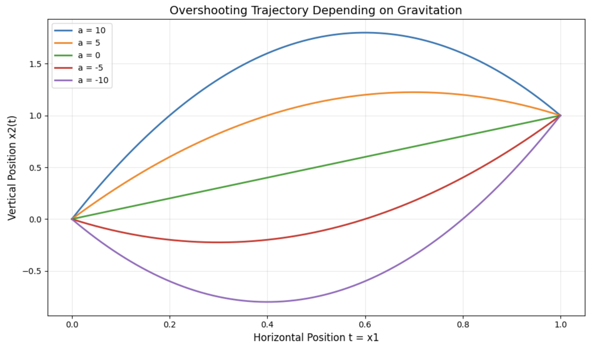

Newton#
Johannes Siedersleben, April 2026
XXX introduction XXX
The Greeks#
Anaximander (610 – 547) is the founder of natural science, the first to think scientifically, according to Carlo Rovelli.
Democrit (460 – 370) invented a theory of atoms without providing any evidence.
Aristotle (384 –322) got it all wrong. His idea was that of objects tending to come to a rest.
Euclid (365 – 300) amazing, compiled (most of) Greek geometry. Valid and virtually flawless to this day. Still THE pattern of mathematics.
Aristarchos of Samos (310 – 240) computed the size of the moon using trigonometry.
Archimedes (287 – 212) found the law of the lever, invented hydrostatics, anticipated modern calculus, and did a lot more. Considered the leading scientist of antiquity.
Eratosthenes (276 – 194) computed the circumference of the Earth (using trigonometry).
Newton’s World#
In Newtonian physics, we study volumeless particles with positive mass that travel through space along a trajectory described by a differentiable function \(x: \{0, T\} \rightarrow \mathbb{R}^3\). The interval \(\{0, T\}\) can extend over microseconds or millennia, but is always finite. Starting at zero is just a notational convenience. \(x(t)\) is the position in space of the particle at time \(t\), \(v(t) = \dot{x}(t)\) its velocity. We write:
This is the standard case. There are variations: When the particle travels along a straight line, we choose this direction as the basis vector, reducing \(x\) to a vector of dimension one. When the particle moves in a plane, \(x\) is reduced to two dimensions. When we study two or more particles at a time, say two, \(x\) becomes a vector of dimension two, four, or six. A vector of dimension six can represent six vectors of dimension one, three of two, or two of three. We face a small notational challenge, for instance:
where:
In general, dealing with two or more particles is surprisingly inconspicuous: we keep writing \(x\), whatever the dimension; most formulae remain valid regardless of the dimension of \(x\). Notice will be given if they don’t.
The Lagrangian is any differentiable function
that vanishes for large arguments: \(L(x,v) = 0\) if \(\min \{\lVert x \lVert, \lVert v \lVert \} > M\) for some large \(M\).
Think of \(M\) as the diameter of the universe. From a mathematical point of view, \(x\) and \(v\) are arbitrary functions.
The physicist would see \(x\) as the position and \(v = \dot{x}\) as the velocity of a moving particle.
The symbols \(v\) and \(\dot{x}\) are almost interchangeable. So, \(\partial_{\dot{x}}L\) and \(\partial_{v}L\) mean exactly the same:
the partial derivative of \(L\) with respect to the second variable.
The value \(L(x,\dot{x})\) is meant to quantify the mess caused by a particle travelling at velocity \(\dot{x}(t)\) through point \(x(t)\). The total mess along \(x\) is a functional called the action and is defined by:
A functional is a function that depends on another function, and a functional derivative is a derivative with respect to a function, see XXX.
The term “mess” is deliberately vague. What happens is that physicists somehow find the correct Lagrangian, and then interpret it as the “mess”, or deviation from a tranquil, steady state.
Consider a particle that travels from \(0\) to some point \(B\). Starting at \(0\) is again just a notational convenience. For any given Lagrangian \(L\), we can seek trajectories \(x\) that minimize the action \(A\) subject to boundary conditions such as \(x(0) = 0\), \(x(T) = B\). We call such an \(x\) minimal with respect to \(L\) or \(L\)-minimal.
A principle is something that has been observed for ages and is taken for granted without further proof. A famous example is the fact that the speed of light is the same for all observers. We are going to state the principle of least action for classical physics. It governs all movements in this world, from leaves whirling in the wind to rockets flying to Mars.
Definition 1 (Principle of Least Action)
For every problem in classical physics, from free fall to magnetic fields, there is a Lagrangian \(L\) such that \(L\)-minimal trajectories describe with high accuracy what happens in reality.
This is arguably the most significant physical principle of all. In classical physics, it gives rise to the Euler–Lagrange equation, aka equation of motion. It extends gently to the theories of relativity and quantum mechanics: The famous equation \(E = mc^2\) is a simple form of the relativistic version of Euler–Lagrange; the quantum mechanical version is known as the Schrödinger equation.
A real number \(x\) is called a stationary point of a function \(f\) iff the derivative of \(f\) vanishes at \(x\), see Theorem 33. All local extrema of \(f\) are either stationary or boundary points.
A trajectory \(x\) is called a stationary point of a Lagrangian \(L\) iff the functional derivative of \(A\) vanishes at \(x\) :
As there are no boundaries for \(L\), all local extrema of \(L\), and in particular all \(L\)-minimal trajectories \(x\), are stationary.
Theorem 1 (Euler-Lagrange)
Let \(L\) be a Lagrangian. A trajectory \(x\) is stationary iff it solves the Euler-Lagrange equation
subject to the boundary conditions:
Equation (4) reads as \(n\) independent equalities:
for any dimension \(n\) of \(x\).
Proof. We must write out the equation (3). By definition of functional derivatives, we have
for any differentiable function \(h : \mathbb{R}^3 \to \mathbb{R}\) satisfying \(h(0) = h(T) = 0\). That’s necessary because \(x + h\) is supposed to fulfill the boundary conditions.
\(A\) is differentiable in \(x\) iff \(\delta A\{x\}\) is independent of \(h\). Writing \(L\) for \(L(x(t) + \epsilon h(t), \dot{x}(t) + \epsilon \dot{h}(t))\) and integrating by parts gives us:
With \(\epsilon = 0\) and writing \(L\) for \(L(x(t), \dot{x}(t))\) it follows:
The first term in (7) vanishes because \(h(0) = h(T) = 0\).
Therefore, for every \(h\), the second term vanishes too:
This gives equation (4). Note that
is a scalar product on \(C(\{0,T\})\). We are using the fact that \(g = 0\) iff \((g|h) = 0\) for all \(h\).
Remark 1 (On Lagrangians)
Let \(L\) be a Lagrangian.
(a) Multiplying \(L\) with a non-zero factor, e.g. \(-1\), doesn’t affect Euler-Lagrange. EL yields potential \(L\)-minimizers and -maximizers. However, it cannot distinguish between them.
(b) Adding a constant to \(L\) doesn’t affect Euler-Lagrange.
(c) Adding a gradient \(G(x)\) to \(L\) doesn’t affect Euler-Lagrange because \(\partial_x G = 0\).
(d) The usual reasoning is as follows: Solving the Euler–Lagrange equation yields many solutions (potential \(L\)-minimizers and -maximizers) that differ by some integration constants. Use the boundary conditions to assign appropriate values to these and ensure that your solution is indeed \(L\)-minimal.
The link between the Lagrangian and observed reality is established by the following definition:
Definition 2 (Force and Momentum)
For a given Lagrangian \(L\), the quantities force and momentum are defined by:
which reduces the Euler-Lagrange equation to:
If you have an idea of force and momentum, you get the Lagrangian by integration. If you have an idea of the Lagrangian, you get force and momentum by differentiation, and can compare these with your measurements. The good news is that today, Lagrangians are well-known, and many of them follow a few simple patterns. We can just use them and get quickly to our results. If, for whatever reason, you need a hitherto unknown Lagrangian, follow Susskinds advice: guess it, buy it, or steal it! (see [Susskind and Hrabovsky, 2014], p. 999).
This world of volumeless particles, trajectories, and Lagrangians is a purely mathematical realm that I call Newton’s world. No one has ever seen volumenless particles, and the idea of one time dimension plus three space dimensions extending to infinity contradicts the theory of relativity. Newton’s world is a model of ours, extremely useful, but inaccurate and counterintuitive. It abstracts away what is unimportant (the volume of particles) and idealizes to keep the math simple (straight lines extending to infinity rather than a curved space). Within Newton’s world, we can use mathematics — mostly calculus — to derive a multitude of results that are true in the mathematical sense, but few of which have any bearing on our world. However, if they do, they will only ever be approximate as long as particles move much more slowly than light. Newtonian mechanics becomes outright wrong when particles move fast.
The concept of Lagrangians is strange. You can choose any function as your preferred Lagrangian, plug it into Euler-Lagrange, and develop your own physics from here. Unfortunately, your results are unlikely to have a counterpart in the real world, so nobody will be interested. But if they do, and observed particles follow your equations of motion with reasonable accuracy, then your Lagrangian is likely to be the good one. Some years or decades later, your equations will be endorsed by the community of physicists. But there will never be a proof in any mathematical sense.
Here is our roadmap: We are going to present some key Lagrangians that cover systems ranging from free fall to magnetic fields. Each time, we will employ the same procedure: We plug the Lagrangian into the Euler-Lagrange equation, solve it, and interpret the result.
Hamilton, Conservation of Energy#
Lie-Algebra, Poisson Brackets#
Definition 3 (Lie Algebra)
Let \(V\) be a vector space over \(\mathbb{R}\) (or any other field). Let \(\{\cdot, \cdot\}\) be a mapping
that fulfills th following conditions for every \(A, B, C \in V\):
(i) \(\{\cdot, \cdot\}\) is bilinear.
(ii) \(\{A, A\} = 0\)
(iii) The Jacobi identity holds:
Then \((V, \{\cdot, \cdot\})\) is called a Lie-Algebra.
A frequent example is the vector space of square matrices with the commutator \(\{A, B\} = AB - BA\) as bilinear mapping. Conditions (i), (ii), and (iii) obviously hold. Another important example is Poisson brackets, to which we now turn.
Definition 4 (Poisson Brackets)
Let \(A, B\) be differentiable, real-valued functions of two variables \(x, p\) defined on \(\mathbb{R}^n \times \mathbb{R}^n\). The Poisson brackets are defined by:
Theorem 2 (Properties of Poisson Brackets)
(a) Let \(V = C^1(\mathbb{R}^n)\). Then \((V, \{\cdot, \cdot\})\) is a Lie algebra.
(b) The following equations hold for any \(A \in V\), and \(x, p \in \mathbb{R}^n\):
Proof. We only show the Jacobi equation (10)
Definition 5 (Hamilton)
Let \(A, B, H\) be differentiable, real-valued functions of two variables \(x, p\) defined on \(\mathbb{R}^n \times \mathbb{R}^n\). The dimension \(n\) is often three (that’s one particle), sometimes more.
(b) A function \(H\) is called Hamiltonian, iff
It is clear in this case that:
which is often abbreviated to:
Theorem 3 (Hamiltonian, Energy)
Let \(H\) be defined by;
or:
Then \(H\) is a Hamiltonian iff \(L\) is stationary, that is, it fulfills Euler-Lafrange.
The function \(H\) defined by (12) is called the Hamiltonian of \(L\) or the energy \(E\) of \(L\).
Proof. Let $x
Conservation of Information, Gibbs-Liouville#
Conservation of Momentum#
A Catalogue of Lagrangians#
We consider some important Lagrangians, starting from the simplest case of no acceleration and working up to the magnetic field. The boundary condition is always the same, with some \(B \in \mathbb{R}^3\):
Momentum:
General Case#
Property |
Expression |
Comment |
|---|---|---|
Lagrangian |
\(L(x, \dot{x})\) |
a differentiable function |
Force |
\(F = \partial_x L \) |
|
Momentum |
\(p = \partial_{\dot{x}} L\) |
\(\dot{p} = \partial_t \partial_{\dot{x}} L\) |
Euler-Lagrange |
\(\partial_t \partial_{\dot{x}} L = \partial_x L\) |
\(\dot{p} = F\) |
Energy |
\(H(x, p) = \dot{x}(p) p - L(x, \dot{x}(p)) \) |
\(H(x, p(\dot{x})) + L(x, \dot{x}) = \dot{x} p(\dot{x})\) |
T, V#
Property |
Expression |
Comment |
|---|---|---|
Lagrangian |
\(L(x, \dot{x}) = T(\dot{x}) - V(x)\) |
|
Force |
\(F = -\partial V\) |
|
Momentum |
\(p = \partial T\) |
\(\dot{p} = \partial \dot{T}\) |
Euler-Lagrange |
\(\partial \dot{T} = -\partial V\) |
\(\dot{p} = F\) |
Energy |
\(H(x, p) = T(\dot{x}(p)) + V(x) \) |
\(L(x, \dot{x}) = H(x, p(\dot{x})\) |
Standard Lagrangian#
Property |
Expression |
Comment |
|---|---|---|
Lagrangian |
\(L(x, \dot{x}) = \frac{1}{2}m\dot{x}^2 - V(x)\) |
|
Force |
\(F = -\partial V\) |
|
Momentum |
\(p = m \dot{x}\) |
\(\dot{p} = m \ddot{x}\) |
Euler-Lagrange |
\(\ddot{x} = -V\) |
\(\dot{p} = F\) |
Energy |
\(H(x, p) = \frac{p^2}{2m} + V(x)\) |
\(= \frac{1}{2}m\dot{x}^2 + V(x)\) |
No Acceleration#
Property |
Expression |
Comment |
|---|---|---|
Lagrangian |
\(L(x, \dot{x}) = \frac{1}{2}m\dot{x}^2\) |
potential = 0 |
Force |
\(0\) |
|
Momentum |
\(p = m \dot{x}\) |
\(\dot{p} = m \ddot{x}\) |
Euler-Lagrange |
\(\ddot{x} = 0\) |
|
Trajectory |
\(x(t) = vt\) |
\(v = \frac{B}{T}\) |
Energy |
\(H(x, p) = \frac{p^2}{2m}\) |
\(= \frac{1}{2}m\dot{x}^2\) |
The solution is a constant motion from \(0\) to \(B\), and the velocity \(v\) is such that the particle arrives at \(B\) at time \(T\).
Constant Acceleration#
Property |
Expression |
Comment |
|---|---|---|
Lagrangian |
\(L(x, \dot{x}) = \frac{1}{2}m\dot{x}^2 - amx\) |
\(a\) = acceleration |
Force |
\(-am\) |
|
Momentum |
\(p = m \dot{x}\) |
\(\dot{p} = m \ddot{x}\) |
Euler-Lagrange |
\(\ddot{x} = -a\) |
|
Trajectory |
\(x(t) = - \frac{1}{2} a t^2 + c t\) |
\(c = \frac{B}{T} + \frac{1}{2} aT\) |
Energy |
\(H(x, p) = \frac{p^2}{2m} + amx\) |
\(= \frac{1}{2}m\dot{x}^2 + amx\) |
Let us apply this result to a rocket of mass \(m\) flying from \((0,0)\) to \(B = (1, 1)\). Let \(T=1\). The downward acceleration is \(a_2\). Moving a mass of \(m\) units up one distance unit requires an amount of work equal to \(am\). Everything happens in a plane, with coordinates \(x_1\) and \(x_2\).
Setting \(a = \begin{bmatrix} 0 \\ a_2 \end{bmatrix}\) and \(B = \begin{bmatrix} 1 \\ 1 \end{bmatrix}\), we get, with \(t \in \{0, 1\}\):
We notice that:
The horizontal speed is constant. The rocket climbs until \(t_0 = \frac{a_2 + 2}{2 a_2}\) and then descends. The {figure}(#boat-upstream.png) below shows the optimal trajectory upwards (\(a_2\) positive) and downwards (\(a_2\) negative), with \(T = 1\). For \(a_2=0\) we get a straight line.

Fig. 1 Flying Rocket#
This “overshooting” trajectory is actually the optimal solution that minimizes action, not energy expenditure. The principle of least action produces this result because:
Action minimization ≠ distance minimization: The Lagrangian \(L = \frac{1}{2}m\dot{x}^2 - amx\) integrates both kinetic energy and potential energy over time.
Early altitude gain is cheaper: The action functional favors gaining altitude early when you have the full time interval \(T\) to amortize the cost. The parabolic overshoot allows the rocket to:
- Accelerate upward strongly at the start
- Coast through the middle section with less thrust
- Decelerate near the endQuadratic velocity cost: Since kinetic energy is quadratic in \(\dot{x}\), maintaining constant velocity throughout is less efficient (in terms of action) than varying the velocity profile.
The paradox: While a straight line from \((0,0)\) to \((1,1)\) is the shortest path, it’s not the path of least action when fighting a constant opposing force. The physics demands this counterintuitive parabolic trajectory. This is analogous to why projectiles follow parabolic paths under gravity - nature optimizes action, not distance.
Hooke#
Property |
Expression |
Comment |
|---|---|---|
Lagrangian |
\(L(x, \dot{x}) = \frac{1}{2}m\dot{x}^2 - \frac{k}{2}mx^2\) |
|
Force |
\(F = -kx\) |
|
Momentum |
\(p = m \dot{x}\) |
\(\dot{p} = m \ddot{x}\) |
Euler-Lagrange |
\(\ddot{x} = -\omega^2 x \) |
\(\omega = \sqrt{\frac{k}{m}}\) |
Trajectory |
\(x(t) = a \sin \omega t + b \cos \omega t\) |
\(a = x(\frac{\pi}{2}), b = x(0)\) |
Energy |
\(H(x, p) = \frac{p^2}{2m} + \frac{k}{2}mx^2\) |
\(= \frac{1}{2}m\dot{x}^2 + \frac{k}{2}mx^2\) |
Catenary#
Magnetic Field#
Property |
Expression |
Comment |
|---|---|---|
Lagrangian |
\(L(x, \dot{x}) = \frac{1}{2}m\dot{x}^2 + qA(x)\dot{x}\) |
\(B = \partial \times A\) |
Force |
\(F = q \partial_x A \dot{x} \) |
|
Momentum |
\(p = m \dot{x} + qA(x)\) |
\(\dot{p} = m \ddot{x} + q \partial_x A \dot{x}\) |
Euler-Lagrange |
\(\ddot{x} = \frac{q}{m}(\ddot{x} \times B)\) |
\(= \frac{q}{m} ((\partial_x A)^T - \partial_x A) \dot{x}\) |
Energy |
\(H(x, p) = \frac{1}{2m} (p- qA)^2\) |
\(= \frac{1}{2}m\dot{x}^2\) |
A Note on Trains, Elevators, and Spaceships#
Train
You cannot tell which train is moving.
You cannot measure speed without looking out of the window.
Elevator
Inside an elevator, you cannot tell gravitational force from acceleration/deceleration
Inertia and gravitation are indistinguishable.
Spaceships, or: Why do astronauts float?
Gravity amounts to 99.7% of what it is on the ground at 10 km altitude (aeroplane), 89% at 400 km (ISS) and 2% at 35.786 km (geostationary satellites).
The ISS orbits the Earth 15.6 times per day, a geostationary satellite exactly once. The speed is such that the centrifugal force compensates exactly the remaining gravity (89% or 2% resp. ).
Astronauts cannot distinguish between gravity and centrifugal force (= acceleration). Their levitation is mostly due to centrifugal force.
Classical Mechanics#
What’s the Problem: How do particles move in a field (spring, gravitational field, electric field, magnetic field, …) and how do particles affect the field?
Principle of Least Action (amazing, this principle rules the world!)
The Lagrangian defines the effort caused per unit of time
The action is the accumulated amount of effort over time
The principle says: Every system minimizes the action
Equations of Motion (Euler-Lagrange, Hamiltonian)
Principle of Relativity (sic): Speed is relative and symmetric (you cannot tell which train is moving). There is no absolute rest (Galileo Transformation)
Consequences:
Conservation of Momentum (Newton’s Laws)
Conservation of Energy (Energy = the Hamiltonian)
Conservation of Information (Theorem of Gibbs-Liouville)
Intro#
Imagine Newton (1687) studying falling apples or, more generally, how heavy objects move when subjected to gravity. He abstracted away properties such as volume, feel, and colour, eventually arriving at the idea of volume-less particles with positive mass, and calculated how they move [Susskind and Hrabovsky, 2014]. aindrops, apples, and planets are tangible instances, but of course they do have shape, volume, and many other properties. Newton’s equations of motion are exact for particles (which aren’t real), but approximate otherwise. Newtonian mechanics takes place in space-time, with four dimensions extending in both directions straight to infinity. This is the stage, and the actors are volume-less particles. You need at least one of them; if there are many, it’s called statistical mechanics. Newtonian mechanics is a model (in the mind, on paper, or on a computer) that describes reality and allows us to make predictions, but it is separate from nature. A falling raindrop is completely unaware of Newton’s laws, raindrops have always fallen in the same way. Newton’s laws have less effect on objects in motion than a thermometer has on temperature.
References#
Let us apply this result to a boat (or a swimmer, for example) starting on the left bank of a one-unit-wide river at point \((0,0)\), and going to point \(B = (1, b_2)\) on the right bank. The current flows from top to bottom with a constant acceleration of \(-a_2\). Moving a mass of \(m\) units upstream over a distance of \(b_2\) units requires an amount of work equal to \(amb_2\). Everything happens in a plane, with coordinates \(x_1\) and \(x_2\).
This “overshooting” trajectory is actually the optimal solution that minimizes action, not energy expenditure. The principle of least action produces this result because:
Action minimization ≠ distance minimization: The Lagrangian \(L = \frac{1}{2}m\dot{x}^2 - amx\) integrates both kinetic energy and potential energy over time.
Early altitude gain is “cheaper”: The action functional favors gaining altitude early when you have the full time interval \(T\) to amortize the cost. The parabolic overshoot allows the rocket to: - Accelerate upward strongly at the start - Coast through the middle section with less thrust - Decelerate near the end
Quadratic velocity cost: Since kinetic energy is quadratic in \(\dot{x}\), maintaining constant velocity throughout is less efficient (in terms of action) than varying the velocity profile.
The paradox: While a straight line from (0,0) to (1,1) is the shortest path, it’s not the path of least action when fighting a constant opposing force. The physics demands this counterintuitive parabolic trajectory. This is analogous to why projectiles follow parabolic paths under gravity - nature optimizes action, not distance.